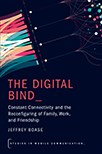

Business Wise Podcast
Hoe overleef ik werken met Gen Z is een wekelijkse podcast van over de nieuwe generatie op de arbeidsmarkt. De vooroordelen vliegen je om de oren, maar: slaan ze ergens op? Doet deze generatie het écht allemaal anders? Presentator Mirthe Westrik gaat in gesprek met Gen Z’ers en bespreekt thema’s als thuiswerken, doorgroeimogelijkheden en salaris
Documentaire

Boek
